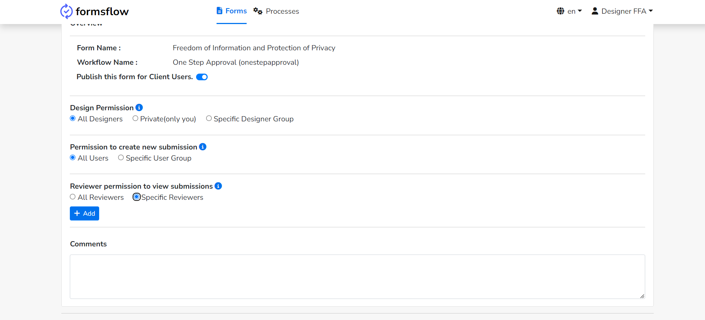

<article class="docs-article" >
    <section class="docs-section" id="version" >
        <div>
            <h1>Role Based Access Control for forms</h1> 
            <hr><br>
            <p>formsflow introduces the ability for designers to set permissions for forms, catering to both designers and client
            users. This functionality provides fine-grained control over the visibility of forms based on user roles.</p>
            <p>
                With this feature, designers using formsflow can define specific permissions with each form they create. They have the
                flexibility to determine which roles can view and interact with a particular form. By configuring these permissions,
                designers can ensure that only authorized individuals or user roles can access and work with the form.
            </p>
            <p>
                Overall, this feature enhances the flexibility and control available to designers within formsflow, empowering them to
                manage permissions and determine who can interact with their forms. It ensures that the visibility of forms aligns with
                the assigned roles, creating a more secure and tailored environment for both designers and client users.
            </p>
            <ol>
                <li>
                    Log in as a designer user and create a form, then save it.
                    
                </li>
                <li>
                    Attach the form with a workflow.
                    <br>
                    
                </li>
                <li>
                     Select permissions for the specific form.
                    <br>
                        <h4 class="mt-3">
                            For designer permission
                        </h4>
                        <ul>
                        <li>
                            Case I :: &nbsp; Accessible for all designers : default.
                        </li>
                        <li>
                            Case II :: &nbsp; Private(Only You) : If only the current designer needs to access the form.
                            
                        </li>
                        
                        <br>
                        <p><strong>Note:</strong><em>
                            The creator of a form will always have access to the form, designed
                            by him/her even though the option is Private(Only You).
                        </em> 
                        </p>
                        <li>
                            Case III :: &nbsp; Specific Designer Group : Give access to specific groups of designer.
                            
                            <p class="mt-3">
                                Click on the Specific Designer Group option, and then click on Add button .
                                </p>
                            <p>
                                This will  display the list of groups available :
                                
                            </p>
                        </li>
                    </ul>
                    <br><br>
                    <p><strong>Note:</strong> <em> The creator of a form will always have access to the form, designed by him/her even
                            though he/she is not a member of the specific group.</em></p>
                    <br>
                    <h4 class="mt-3">
                        Permission to create new submission
                    </h4>
                    <br>
                    <p>This permission grants exclusive rights to a specified user group, allowing them to create new submissions for the designed form.</p>
                    <ul style="list-style-type:disc;">
                        <li>
                            Case I :: &nbsp;  All reviewers and clients: default. 
                            
                        </li>
                        <li>
                            Case II ::  &nbsp; Specific User Group: Give access to specific groups of clients and reviewers
                            
                            <p class="mt-3">
                                Click on the Specific User Group option, and then click on Add button to display the list of groups available.
                                
                            </p>
                        </li>
                    </ul>

                    <h4 class="mt-3">
                        Reviewer permission to view submissions
                    </h4>
                    <br>
                    <p>With this permission, the assigned reviewer has the capability to review the submission history of the designed form.</p>
                    <ul>
                    <li>
                        Case I :: &nbsp;  All Reviewers: default. 
                        
                    </li>

                    <li>
                        Case II :: &nbsp; Specific Reviewers : Give access to specific groups of reviewers
                        
                        <p class="mt-3">
                            Click on the Specific Reviewers, and then click on Add button to display the list of groups available.
                            
                        </p>
                    </li>
                    
                    <br>
                   
                </ul>
                    <br>
                    <p><strong>Note</strong> :<em>
                        When choosing specific designer groups or client groups, the list contains all the groups available in Keycloak,
                        including the designer groups, client groups, and reviewer groups. The designer has to choose the appropriate group
                        required.
                    </em> </p>
                    <br>
                </li> 

                <li>
                    Publish and save the form for client users.
                    
                </li>

            </ol>
            <br>
            <p><strong>Note</strong> :<em>
                    If existing forms are to be listed for clients, you need to migrate the existing Camunda authorizations. For this, you
                    have to run a bash script inside the FormsFlow web API. If you need to run this script in the instance or server, such
                    as a Kubernetes cluster or Nginx, you have to access the Docker container of the FormsFlow web API and execute the bash
                    script called "migration.sh". Alternatively, if you are setting up the environment locally and running the Docker
                    container locally, you can get inside the FormsFlow web API container and run the "migration.sh" command. In the case of
                    running the web API with Flask locally, you should activate the virtual environment and run the bash script within it.
                    You can create the virtual environment by following the instructions provided in the Makefile inside the FormsFlow web
                    API.
                </em> </p>

        </div>
    </section>
</article>
